Vanderbilt · Anchor's Edge · ATD facilitator guide · print edition
On the Map, the facilitator guide

Run of show
| Screen | Full (min) | Core (min) |
|---|---|---|
| Welcome / QR | 2 | 1 |
| The mission | 2 | 1 |
| The goal we are targeting | 2 | 1 |
| Objectives | 1 | 1 |
| Agenda | 1 | skip |
| What the system sees | 8 | 6 |
| What you gain | 10 | 7 |
| Make your skills legible | 9 | 6 |
| The core idea | 1 | skip |
| Recap quiz | 4 | 3 |
| Capstone commitment | 4 | 3 |
| Closing | 1 | 1 |
| Total | 45 | 30 |
The goal this month serves
Goal 1, Talent Marketplace & Transfer Portal.
Audience
All Vanderbilt staff in the Anchor's Edge weekly rhythm; nobody is assumed to manage anyone. Works for 6 to 40 on a call; breakouts run in pairs. No prerequisites; October is the opening month of the See the Talent Around You theme.
Room setup
Virtual, instructor led: camera on, deck link in chat, breakouts of 2 available. Learners follow on their own screens via the welcome-slide link or QR. Nothing typed into the deck is saved or sent.
Materials
- Meeting platform with screen share and breakout rooms; deck link ready to paste in chat
- Facilitator machine with the facilitator edition open; notifications off
- Learners on their own devices with the learner link
- Chat open for share-outs; the capstone copy button pastes there cleanly
A week before
- Run the learner edition start to finish and do every interaction honestly; you will demo at least one live.
- Read this month's theme page on the Anchor's Edge dashboard so the goal tie-in is fluent.
- Send the invite with the learner link and one line on what to bring.
The day before
- Test screen share with the facilitator edition; confirm the notes rail is readable.
- Open the learner link on a second device; the QR must land there.
- Run the section interactions once so you can drive them without reading.
30 minutes before
- Welcome slide up as people join; link pasted in chat.
- Close every other tab; silence the machine.
- Breakout rooms pre-configured in pairs.
When things go sideways
If Screen share or the site fails mid-session: Paste the learner link in chat and narrate from your own browser; every interaction runs on learner devices without the share.
If Breakout rooms are unavailable: Run the breakout prompts as 60-second chat storms: everyone types their answer at once, you read the best three aloud.
If Someone worries the profile data will be used against them: Answer plainly and without hedging: the profile is not a performance tool and reviews never read it. It matches skills to opportunities. Skills and roles, never ratings.
If Someone says their job has no skills worth listing: Ask the room what that person's colleagues come to them for. Every role carries named skills; that question usually surfaces two inside a minute.
Tough questions, ready answers
Q: Is this system going to be used to cut jobs or monitor productivity?
No. The Talent Marketplace reads the skills profile you keep, nothing else: not email, not activity, not output. Its purpose under Goal 1 is retention and internal mobility, which is the opposite of a cut list. A visible skill makes you harder to overlook, not easier to replace.
Q: If I make my skills visible, will my manager think I am trying to leave?
A current profile is the university norm, not a leaving signal; this month's Manager Monday session asks managers to make talent visible on their own teams for the same reason. Internal mobility keeps people at Vanderbilt. The riskier move is staying invisible.
Q: I am not sure what counts as a skill worth listing. Where do I start?
Start with what people come to you for. If colleagues bring you their scheduling messes or their unreadable drafts, those are named skills. The Know-Your-Team lab and the Talent Management course on LinkedIn Learning both help you name more, if you want the extra rep.
Copy-paste templates
Pre-work invite (paste into the calendar invite)
Subject: Tuesday, 45 minutes on the system that makes your skills visible. Bring nothing but one thing you are good at that your job title does not mention. Live and interactive; have the session link open on your own screen.
7-day pulse (send one week after)
Subject: Is the skill on the map? Three lines, reply whenever: 1) Did the profile move on your card happen? 2) What skill is visible now that was not before? 3) What line will you add next?
After the session
Seven days out, send the pulse: 'Did the profile move on your card happen? What skill is visible now that was not before? What line will you add next?' Count of completed profile updates feeds the month's Goal 1 story.
Welcome / QR Full 2 min · Core 1
Get everyone into the deck on their own screen and set the tone: 45 minutes, live, hands on.
Say
“Welcome to Take-Off Tuesday. Scan the code or click the link in chat so this session runs on your screen too. Forty-five minutes, one focus: The Talent Marketplace: what it shows and how to use it.”
Do
- Slide up as people join; link pasted in chat every few minutes.
- State the norm once: type into your own screen, nothing you enter is saved or sent.
Watch for: People lurking without the deck open. The interactions only land if the deck is on their screen.
Transition: “Before the topic, thirty seconds on why Vanderbilt is asking for this hour.”
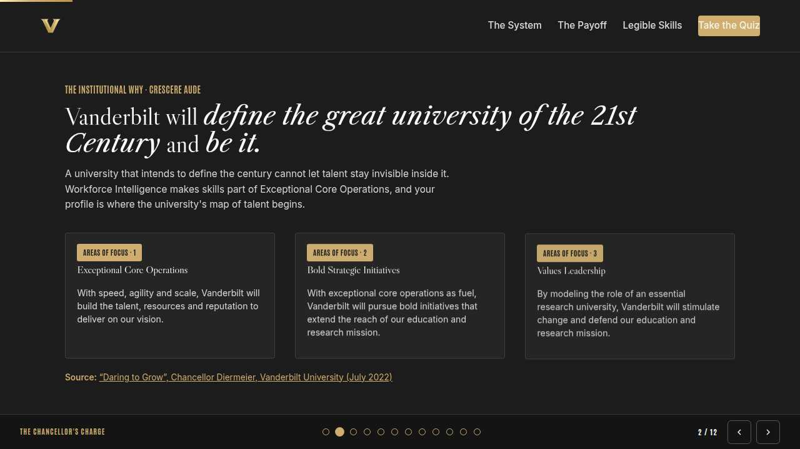
The mission Full 2 min · Core 1
Anchor the session in the Chancellor's charge so the next 40 minutes read as mission work, not admin.
Say
“This year of learning hangs off one sentence from the Chancellor: Vanderbilt will define the great university of the 21st Century and be it. A university that intends to define the century cannot let talent stay invisible inside it. The Talent Marketplace makes skills part of Exceptional Core Operations, and your profile is where the university's map of talent begins.”
Do
- Read the mission line slowly, once.
- Point at the tie-in line and let it sit; no discussion needed here.
Transition: “That is the why. Here is the number we are moving.”
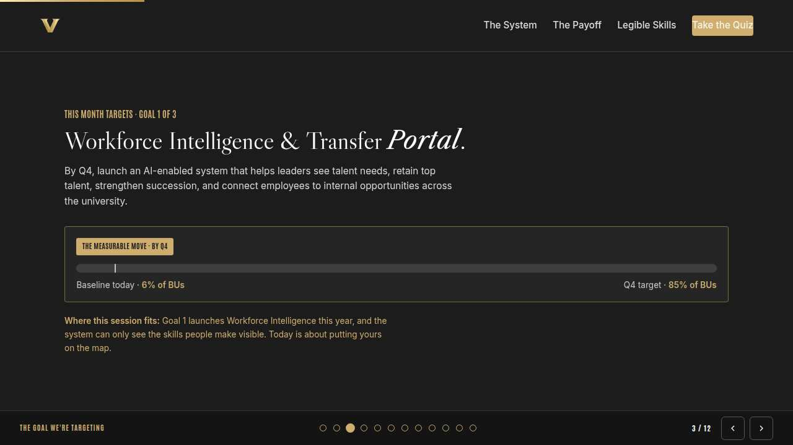
The goal we are targeting Full 2 min · Core 1
Name the enterprise goal this month serves.
Say
“Every month of Anchor's Edge lands on one of three enterprise goals. This month is Goal 1, Talent Marketplace & Transfer Portal: Launch the Talent Marketplace and the Transfer Portal: helping leaders see talent needs, retain top talent, strengthen succession, and connecting employees to internal opportunities across the university. The Talent Marketplace can only see the skills people make visible. Today is about putting yours on the map, one legible line at a time.”
Do
- Read the goal once, plainly.
- One line, not a lecture: this session is one of the moves that serves it.
Transition: “Here is what you will be able to do in 45 minutes.”
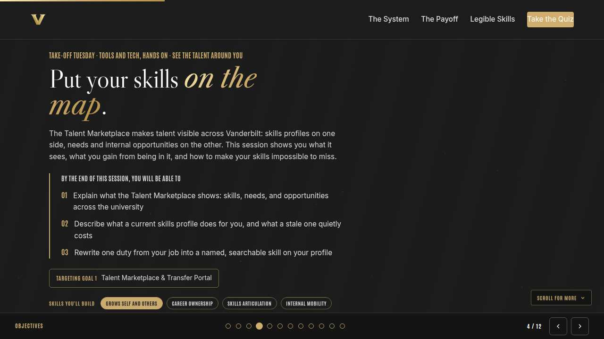
Objectives Full 1 min · Core 1
Set the contract for the session in under a minute.
Say
“By the end of this session: explain what the talent marketplace shows: skills, needs, and opportunities across the university; describe what a current skills profile does for you, and what a stale one quietly costs; rewrite one duty from your job into a named, searchable skill on your profile. That is the whole contract.”
Do
- Read the three objectives briskly; do not elaborate yet.
Transition: “Three stops to get there.”
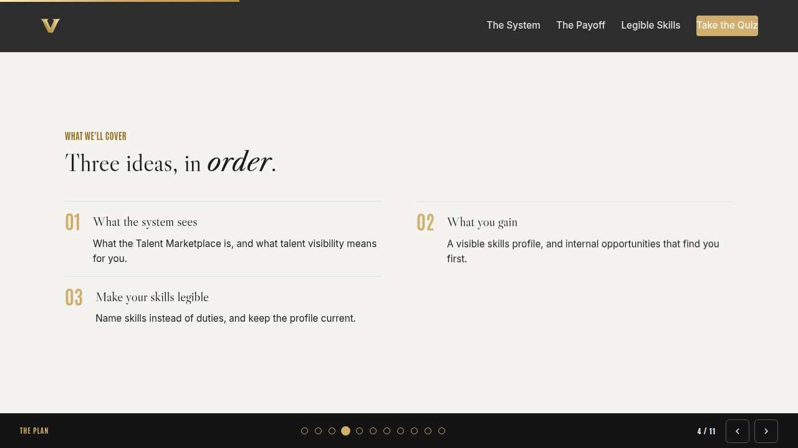
Agenda Full 1 min · Core skip
Show the path so the room can pace itself.
Say
“Three stops: what the system sees, what you gain, make your skills legible. Each one has something to play with, so keep the deck open.”
Do
- Point once at each stop; ten seconds each.
Transition: “Stop one.”
Core path: Core: skip the read-through, gesture at the slide in passing.
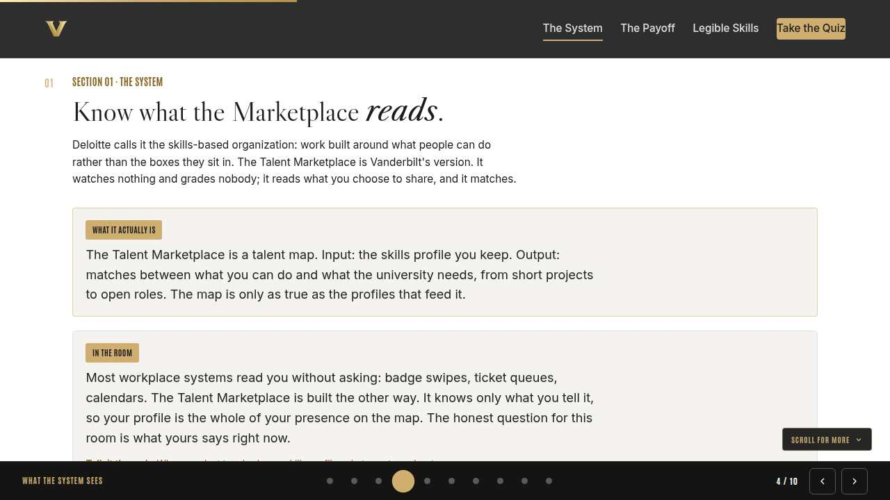
What the system sees Full 8 min · Core 6
Establish what the Talent Marketplace is: a talent map built from skills profiles, never a surveillance or evaluation tool.
Say
“Let's clear the air first, because any system that maps people has earned a little suspicion. The Talent Marketplace does not read your email and it does not grade you. It reads one thing: the skills profile you keep. Most systems at work read you without asking; this one knows only what you tell it. So the only question that matters today is whether you are on the map accurately.”
Do
- Put the In the room card on screen and read it aloud; let the 'it knows only what you tell it' idea land.
- Run the discussion prompt and take two or three voices on what their profile says right now; this is a conversation, not a quiz. The knowledge check lives in the self-paced edition only.
- Run the breakout: one skill nobody outside your team knows about, 90 seconds each way.
Ask
“What was your honest first reaction to hearing Vanderbilt has a Talent Marketplace?”
Expect:
- Suspicion about monitoring
- Curiosity about what it shows
- Assumption it is a tool for managers or HR only
Respond: Take the suspicion seriously and answer it plainly: profile in, matching out, nothing else. The 'for managers' assumption is the one to break; the profile is the staff member's asset first.
Debrief: One idea to carry out of this section: the system sees exactly what you show it. That makes your profile a lever, not a form.
Watch for: Anyone treating this as a managers-only topic. Keep every example on the learner's own skills and career.
Transition: “So what do you actually get for keeping it current? Stop two.”
Core path: Core: skip the breakout; ask for one invisible skill in chat instead.
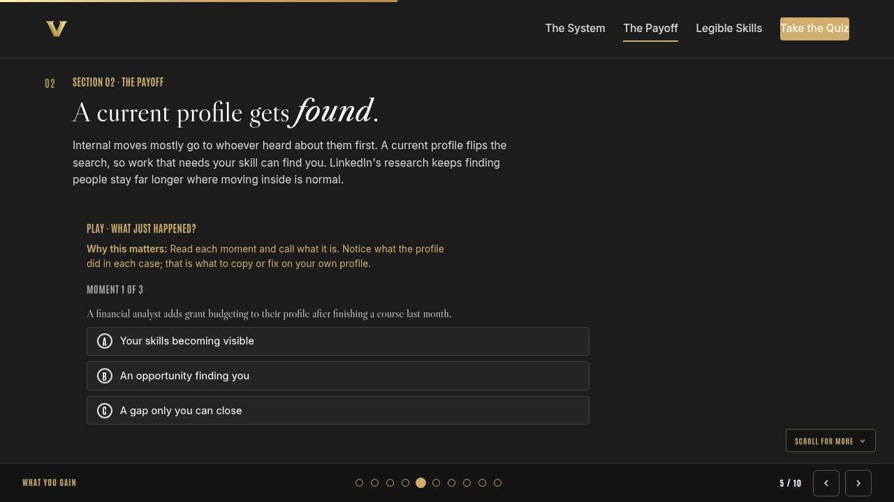
What you gain Full 10 min · Core 7
Show the payoff of a current profile: visibility, and internal opportunities that find you.
Say
“Here is the trade the system offers. You keep an honest, current profile; in return, opportunity searches start running toward you instead of past you. Internal projects, stretch roles, committees: today they go to whoever heard about them in a hallway. A current profile means they can find you on merit, whoever you know.”
Do
- Run What just happened? live; everyone plays on their own screen.
- After round two, pause: ask who has ever missed an internal opportunity they only heard about later.
- Run the breakout on the opportunity that got away.
Ask
“Why do internal opportunities so often go to whoever happened to hear about them?”
Expect:
- Word of mouth travels through networks
- Nobody can search for skills they cannot see
Respond: Both right, and that is the fairness case for the profile: a searchable skill beats a lucky hallway conversation. Visibility is how the playing field levels.
Debrief: The system gives back what profiles put in. Current profile, working map. Stale profile, invisible you.
Watch for: Cynicism that nothing ever comes of systems like this. Do not overpromise; anchor on the ten-minute cost against the missed-opportunity cost.
Transition: “The catch: the map can only match what it can read. Stop three is the writing.”
Core path: Core: run the trainer, skip the breakout, take one voice on the debrief question.
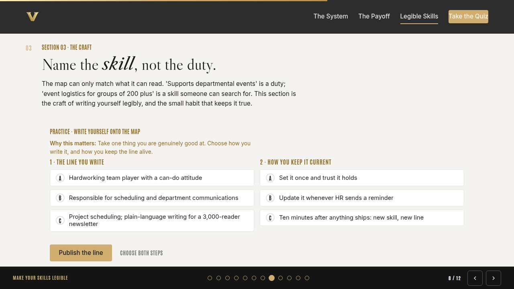
Make your skills legible Full 9 min · Core 6
Teach the craft of naming skills instead of duties, and the habit that keeps a profile current.
Say
“Most profiles fail quietly for one reason: they are written like job descriptions. 'Supports departmental events' tells the map nothing. 'Event logistics for groups of 200 plus' is a skill someone can search for and find. We are going to write one line the legible way, then set the habit that keeps it true.”
Do
- Run Write yourself onto the map; give the room two minutes to make both choices and run it.
- Ask one volunteer to read their outcome aloud, weak or strong.
- Point at the pattern: named skill, real scale, fresh update.
Ask
“Why do adjectives like dedicated or detail-oriented do nothing on a profile?”
Expect:
- Everyone claims them
- There is nothing to search or match on
Respond: Both right. A matching system, and honestly a busy human too, can only work with named skills. Kind words about yourself are not data.
Debrief: Legible means named, specific, and current: the skill inside the duty, in words someone would actually search.
Watch for: People underselling themselves. If someone says they have no skills worth listing, ask what colleagues come to them for; that answer is the profile line.
Transition: “Quick recap, then you build your card.”
Core path: Core: everyone runs the builder solo; skip the read-aloud.
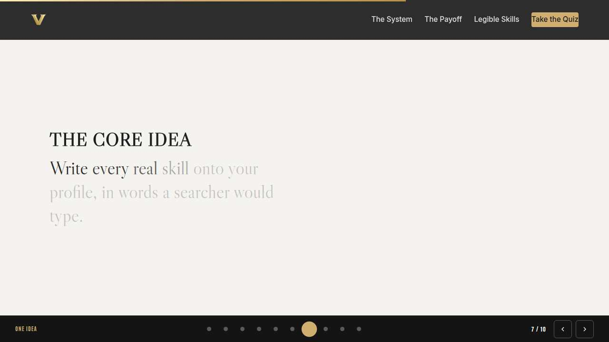
The core idea Full 1 min · Core skip
Land the one sentence the session exists to install.
Say
“If you keep one sentence from today, this is it. Read it once, out loud: A skill the university cannot see is a skill it cannot use, grow, or promote.”
Do
- Pause two beats after reading; the word animation carries it.
Transition: “The recap makes it stick.”
Core path: Core: pass through in stride; the sentence reads itself.
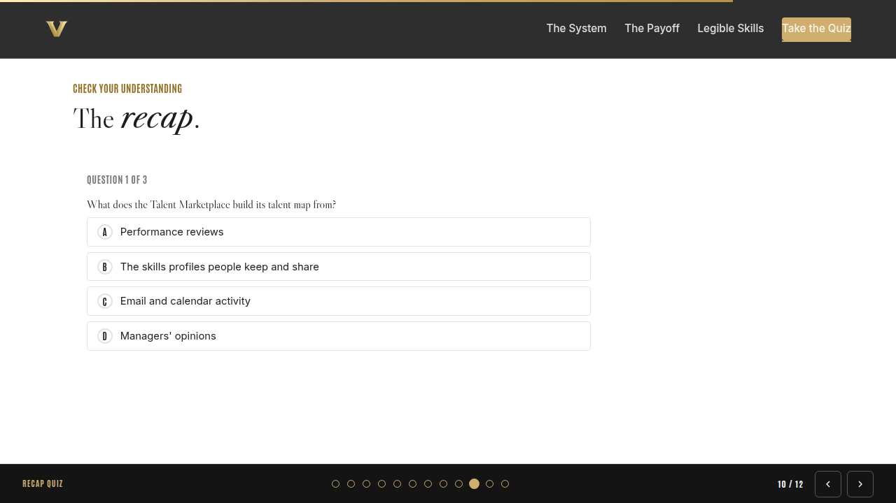
Recap quiz Full 4 min · Core 3
Score the learning while it is fresh; wrong answers are teaching moments, not failures.
Say
“Three questions, on your own screen. Answer honestly; the explanations are where the learning sticks.”
Do
- Give the room 90 seconds to run it individually.
- Ask for a show of results in chat: how many got 3 of 3?
- Read out the explanation for whichever question drew the most misses.
Watch for: Rushing past the why lines. The explanations carry the teaching.
Transition: “Now point it at your real week.”
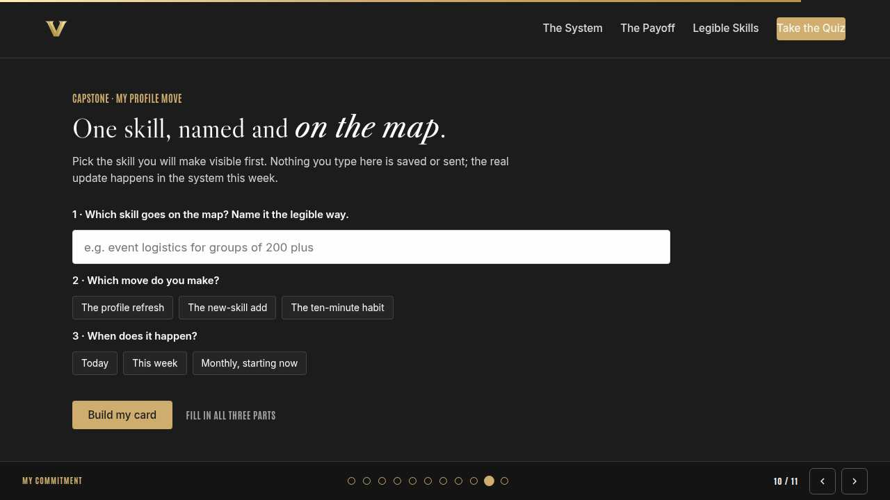
Capstone commitment Full 4 min · Core 3
Convert the session into one named, dated action per person.
Say
“Now make it real. One skill you will make visible, named the legible way. Pick the move, pick the window, build the card, and copy it somewhere you will see it before Friday. Two minutes, quiet, go.”
Do
- Two quiet minutes; everyone builds their own card.
- Invite two or three volunteers to read their card aloud or paste it in chat.
- Remind: copy the card somewhere you will see it this week.
Watch for: Vague entries. Nudge for a name-able situation and a real date.
Transition: “Last slide.”
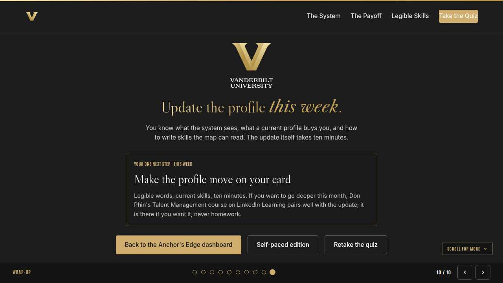
Closing Full 1 min · Core 1
End with the next step and where this thread continues.
Say
“You leave with a profile move and ten minutes of work between you and being findable. Make the update this week. Thursday's Thrive session takes on curiosity, the skill that makes all of this month's talent conversations work; come with one role at Vanderbilt you have quietly wondered about. And if you want more this month, the navigator-led Know-Your-Team lab runs in person and Don Phin's Talent Management course is on LinkedIn Learning, both optional, both good.”
Do
- Point at the next-step card; one sentence.
- Name the rest of the week's rhythm: the other sessions echo this month's theme.
Generated from facilitator/notes.json. The on-screen facilitator edition lives at ./ alongside this guide.